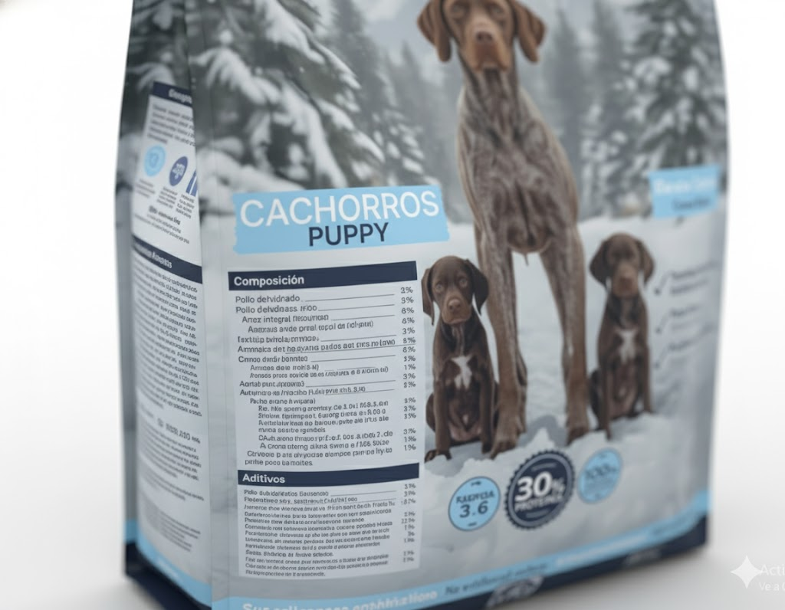
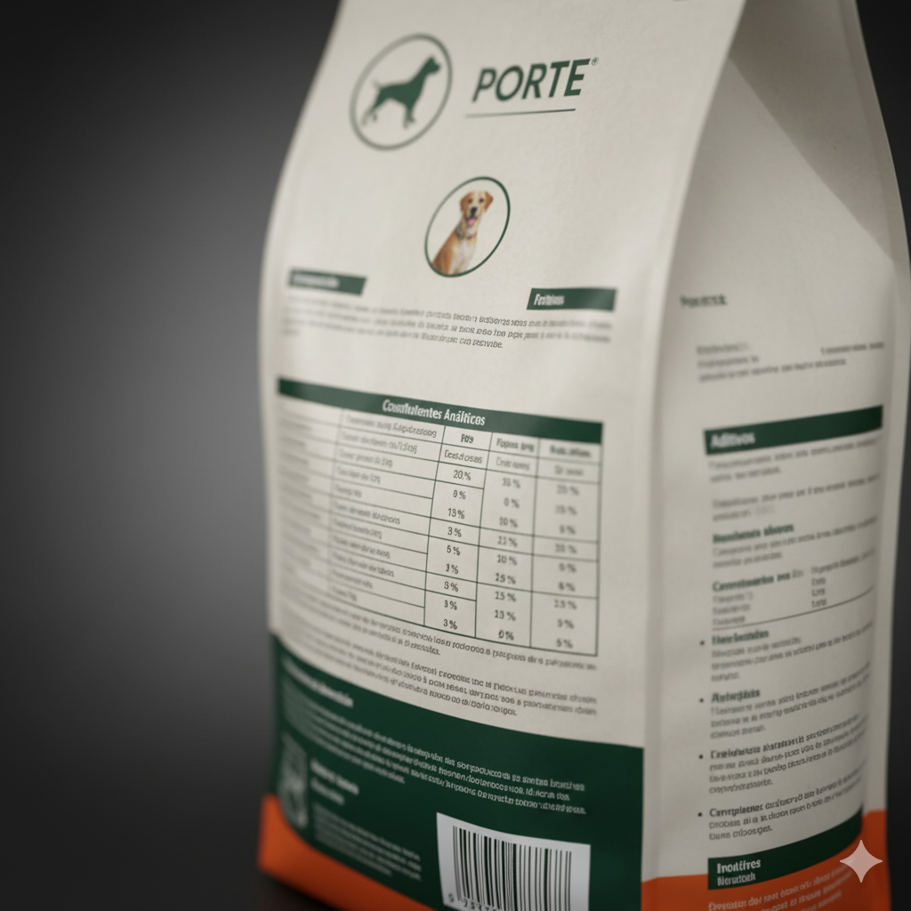

Alimentación
Cómo leer las etiquetas de los bolsones de alimento para mascotas
Leer correctamente la etiqueta de un alimento para mascotas es fundamental para elegir un producto adecuado para perros o gatos según su edad, necesidades nutricionales y estado de salud. Cada sección del envase ofrece información clave que permite evaluar calidad, transparencia y adecuación nutricional. A continuación se presenta una guía completa para comprender cada parte de la etiqueta.
1. Verificar la declaración “Completo y Balanceado”
El primer aspecto que debe verificarse en un bolso de alimento para mascotas es si el producto indica que es “completo y balanceado” para una especie y etapa de vida específica, por ejemplo: “alimento completo y balanceado para perros adultos”. Esta declaración garantiza que el alimento cumple los estándares nutricionales establecidos para cubrir todos los nutrientes esenciales.
Un alimento que no incluya esta declaración puede ser un complemento, snack o producto funcional, pero no está formulado para cubrir el 100 % de los requerimientos diarios. Además, elegir un alimento destinado a una etapa incorrecta (como un producto para cachorros en un animal adulto) puede generar excesos calóricos, deficiencias nutricionales o problemas de crecimiento.
2. Interpretar la lista de ingredientes
La lista de ingredientes se ordena según el peso de cada ingrediente antes del proceso de cocción. Los primeros ingredientes en la lista son los que se encuentran en mayor proporción dentro del producto.
Idealmente, los primeros lugares deberían estar ocupados por proteínas de origen animal claramente identificadas, como pollo, carne vacuna, cordero o salmón. Cuando los primeros ingredientes corresponden a cereales de bajo valor nutricional, harinas vegetales o descripciones ambiguas como “subproductos cárnicos”, la calidad del alimento puede ser inferior.
Debe considerarse también la práctica conocida como “ingredient splitting”, donde un fabricante divide ingredientes similares en varias subcategorías para que no aparezcan en las primeras posiciones. Por ejemplo, maíz molido, harina de maíz y gluten de maíz podrían separarse para desplazar a otros ingredientes hacia arriba.
3. Analizar el Análisis Garantizado
El Análisis Garantizado es una tabla obligatoria que detalla los valores mínimos o máximos de nutrientes fundamentales, como proteína cruda, grasa cruda, fibra cruda y humedad. También puede incluir minerales como calcio y fósforo, aminoácidos esenciales como la taurina o niveles de ácidos grasos omega 3 y omega 6.
Esta sección permite evaluar la cantidad de nutrientes, pero no su calidad. Por ejemplo, un porcentaje alto de proteína podría provenir tanto de fuentes animales como vegetales, y esta diferencia debe contrastarse con la lista de ingredientes. El análisis garantizado no indica aporte calórico total, aunque sí ofrece parámetros para comparar distintos alimentos entre sí.
4. Identificar la especie y la etapa de vida indicadas
Es esencial que el alimento especifique claramente para qué especie y etapa de vida está formulado, tales como perro o gato, cachorro/kitten, adulto, senior o todas las etapas de la vida. Cada grupo requiere niveles nutricionales distintos y balanceados según metabolismo, crecimiento y capacidad energética.
Los alimentos etiquetados como “para todas las etapas de la vida” deben cumplir el perfil nutricional más exigente, que corresponde a cachorros. En consecuencia, pueden resultar demasiado calóricos o nutritivamente densos para animales adultos con baja actividad física.
5. Revisar las instrucciones de alimentación
Las recomendaciones de ración incluidas en el envase están destinadas a servir como guía general, pero se basan en animales promedio. Factores como nivel de actividad, edad, estado de castración, condición corporal, ambiente y metabolismo individual pueden modificar significativamente la cantidad adecuada.
Por este motivo, estas instrucciones deben tomarse como punto de partida. Es recomendable ajustar la cantidad según cambios en el peso y estado corporal y, en caso de duda, consultar a un profesional veterinario.
6. Comprobar información del fabricante y datos de trazabilidad
La etiqueta debe incluir el nombre del fabricante, país de origen, número de lote, fecha de elaboración, fecha de vencimiento y métodos de contacto. Esta información permite asegurar la trazabilidad del producto y verificar buenas prácticas de elaboración, almacenamiento y distribución.
Un fabricante transparente y responsable coloca esta información con claridad y ofrece vías de comunicación para consultas o reclamos, lo cual es una señal positiva de control de calidad.